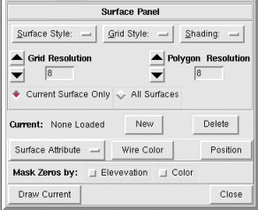

NVIZ Reference Manual
CONTENTS
Surface Panel
The Surface panel controls how loaded surfaces are
drawn. The top half of the panel has drawing style options. The bottom
half has options to add, delete, select, and change attributes of the
current surface.
-

OPTIONS
- Surface Style
- Sets the style for drawing the final surface.
-
- Wire
- Draws the surface as a wire mesh.
This differs from the mesh drawn in fast display
mode
(see Grid Style) because hidden lines are not drawn.
- Polygon
- Draws the surface using filled polygons (most realistic).
- Wire/Poly
- Draws the surface using filled polygons, but with wire mesh
draped
over it.
- Grid Style
- Sets the style for drawing the fast display mode
surface.
-
- Wire
- Draws the grid (fast display mode)
as a wire mesh.
- Coarse Surface
- Draws the grid (fast display mode)
using coarse resolution filled polygons.
This is a low resolution version of the Polygon
surface style. The decimation factor is set from the
Grid Resolution (see above).
- Shading
- Sets the style of shading used for the surface.
-
- Gouraud
- Draws the surfaces with a smooth shading to blend
individual cell colors together.
- Flat
- Draws the surfaces with flat shading with one color for every
two cells. The surface appears faceted.
- Grid Resolution
- Sets the resolution of the coarse surface (default) or wire mesh.
To switch between coarse surface and wire mesh select Grid
Style (see below).
- Polygon Resolution
- Sets the resolution of the final surface.
The resolution is a function of the current GRASS region.
For example, a resolution of 1 draws every raster cell in the current region.
- Current Surface Only
- Applies resolution changes to the currently selected surface only.
- All Surfaces
- Applies resolution changes to all loaded surfaces.
- Current
- Shows the name(s) of all the loaded surfaces. You can use this menu to
select a new current surface.
- New
- Loads a new surface or surface constant.
- Delete
- Deletes (unload) the current surface.
- Surface Attribute
- You can use this menu to control the attributes of the current surface.
-
- topography
- Loads a new raster or constant value to use as elevation
(z values) for the current surface.
- color
- Loads a raster or constant color to drape over the current
surface.
This option is useful for draping imagery such as aerial photography
over a DEM.
- mask
- Loads a raster or constant that controls the areas displayed
from the current surface.
- transparency
- Loads a raster or constant that controls the transparency of
the current surface.
The default is completely opaque.
- shininess
- Loads a raster or constant that controls the shininess
(reflectivity) of the current surface.
- emission
- Loads a raster or constant that controls the light emitted
from the current surface.
- Wire Color
- Sets a wire color for the current surface.
The color can be a constant or set from the current surface color.
- Position
- Changes the x, y, and z position of the current surface.
- Mask Zeros by
- Masks the current surface where elevation or color values are equal to
zero.
-
- Elevation
- Masks elevation values equal to zero. The second No
Zeros masks color values equal to zero.
- Color
- Masks color values equal to zero.
- Draw Current
- Draws the current surface.
- Close
- Closes the Surface panel.